Ecological Regeneration
Landscape planning and ecological regeneration work developed through Robert Wu’s experience as a Project Assistant at Fu Jen Catholic University.
- Location
- Taiwan
- Year
- 2022
- Type
- Landscape Planning
- Focus
- Habitat restoration
- Role
- Design · Visualization

Restoration as a long-term framework.
The work approaches ecological regeneration as an adaptive process linking habitat, water, vegetation and human stewardship rather than as a single finished image.
Urban expansion and intensive land use have degraded water quality, accelerated shoreline retreat and reduced wetland habitats. The project proposes landscape-based regeneration through habitat restoration, watershed management and sustainable land-use strategies.
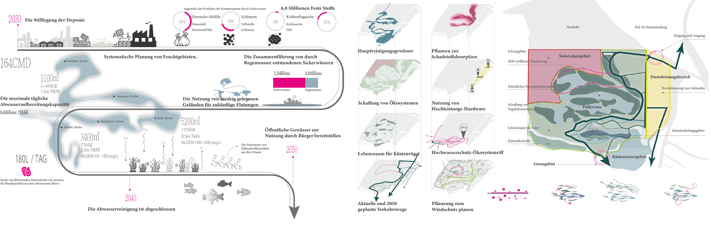
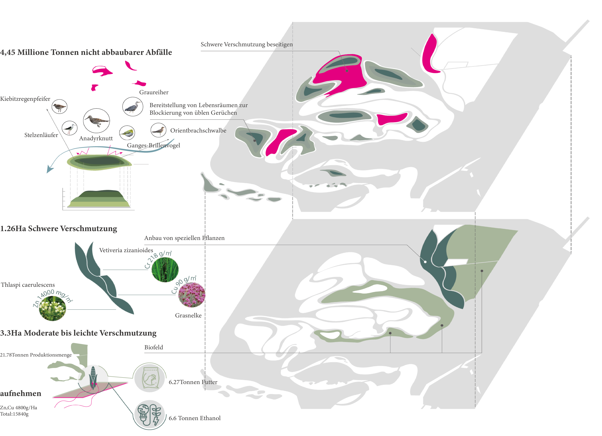
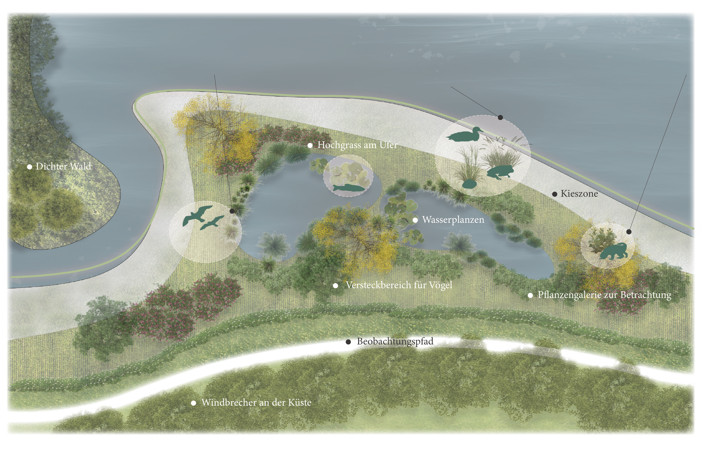
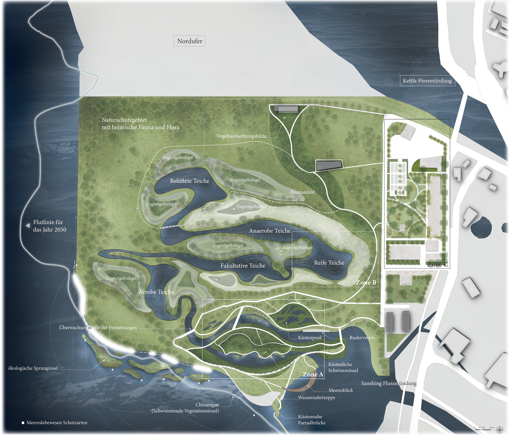
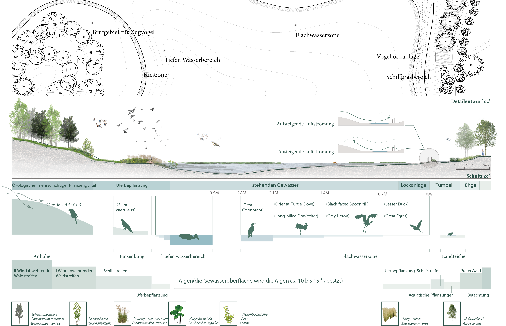
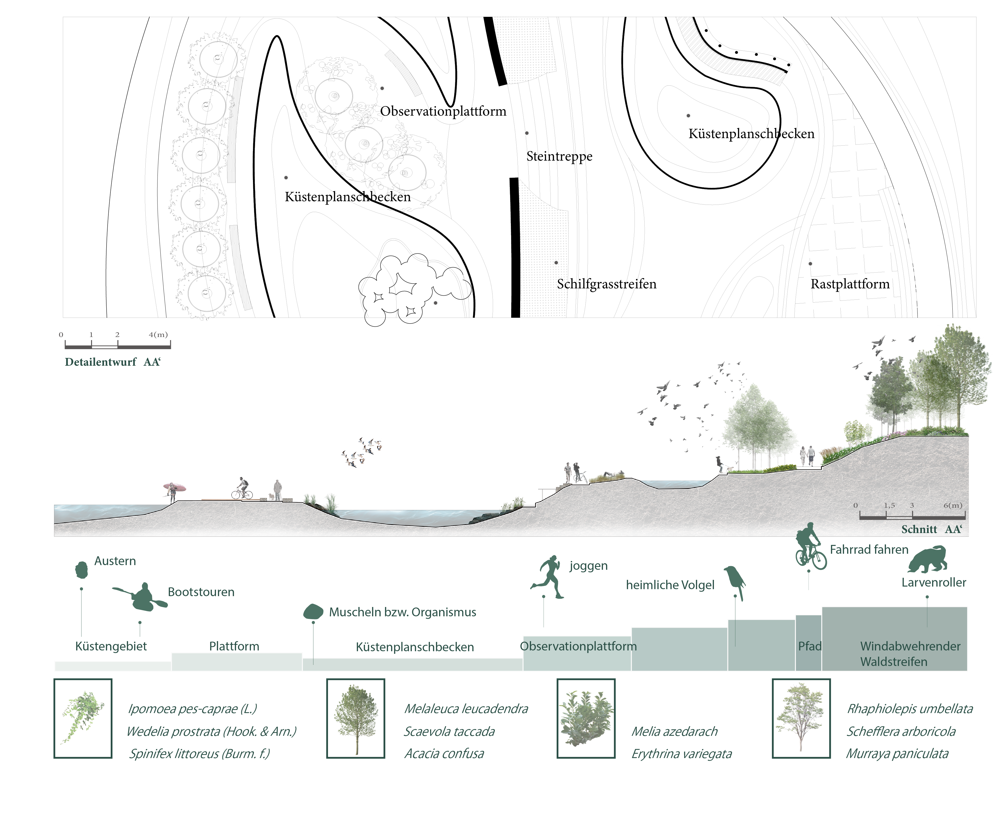
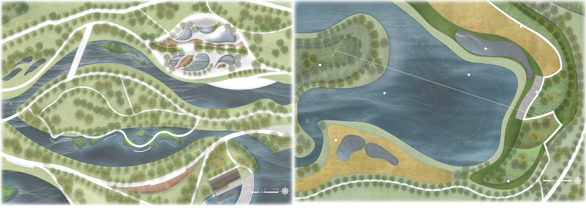
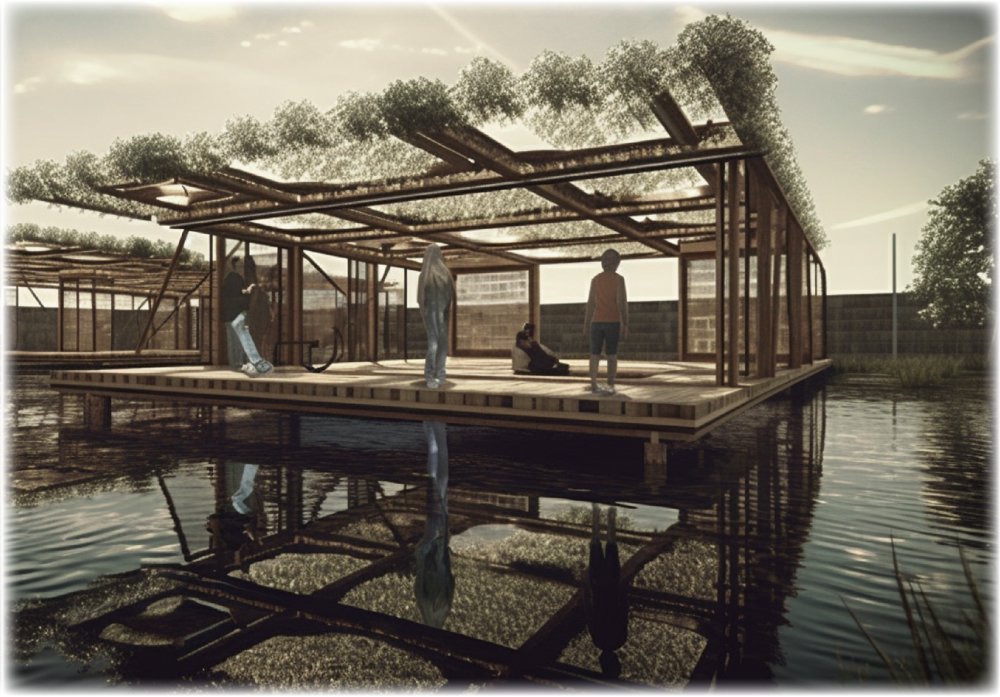
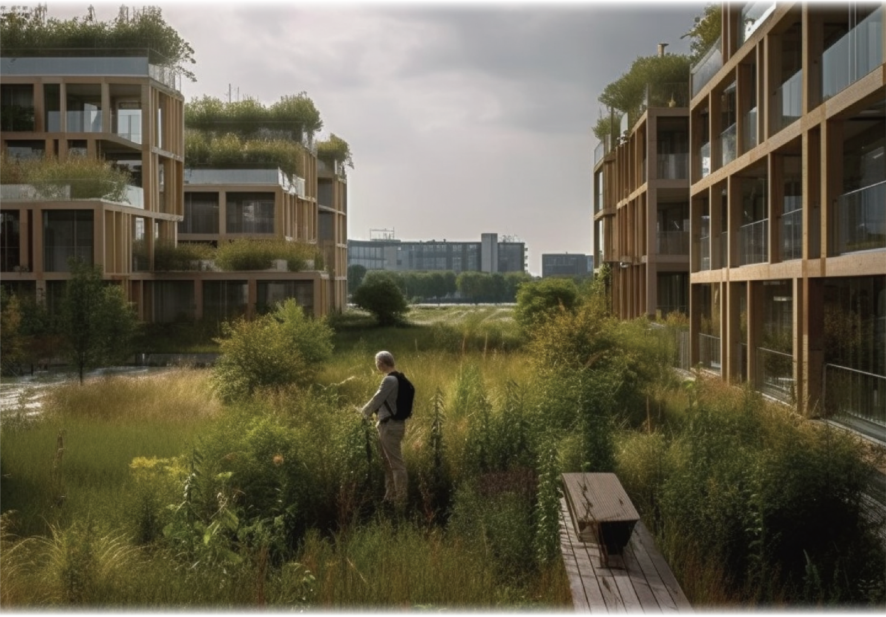
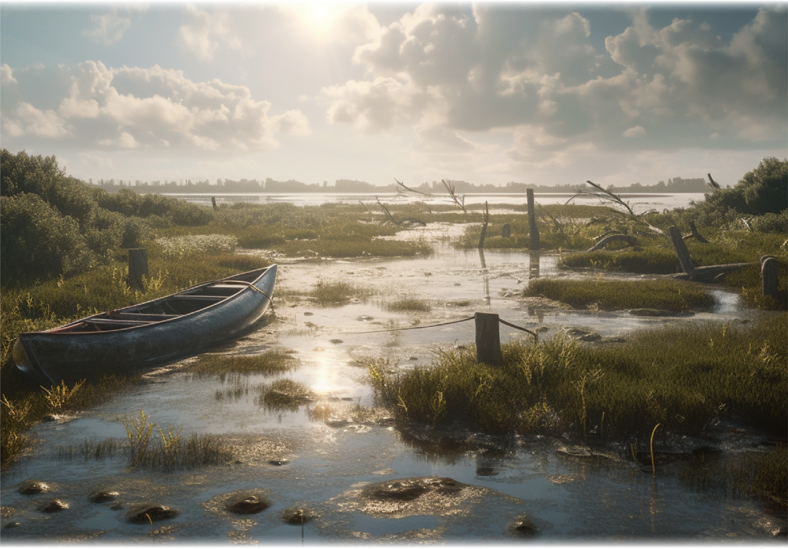
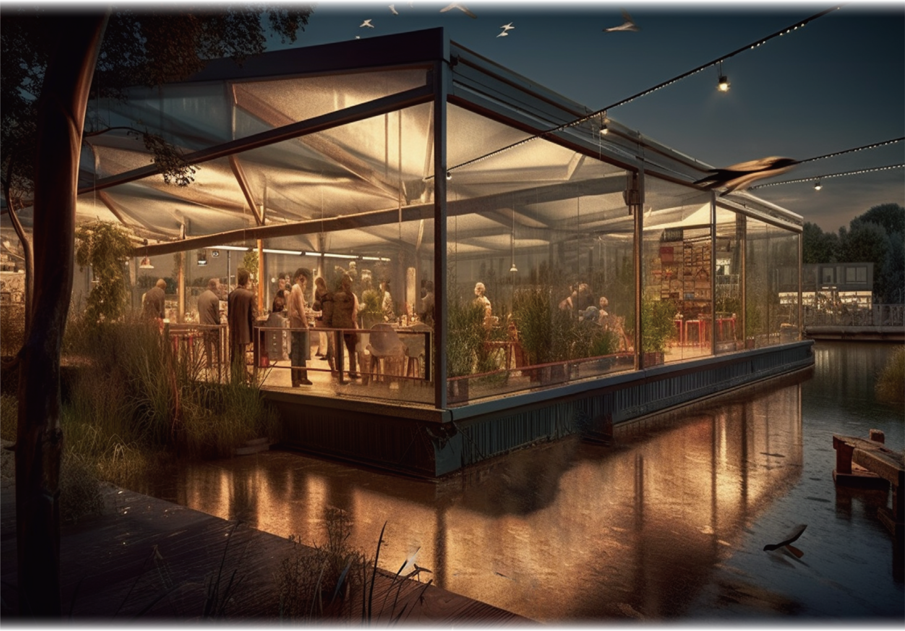